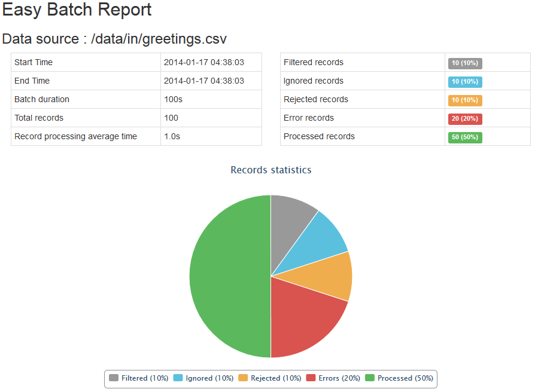
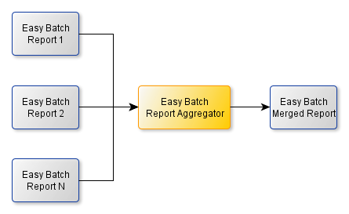

Creating an Easy Batch engine is straightforward and can be done through the EasyBatchEngineBuilder API as follows:
EasyBatchEngine easyBatchEngine = new EasyBatchEngineBuilder().build();
The Easy Batch engine builder API is the main entry point to configure and create Easy Batch engine instances.
Once you have created an Easy Batch engine instance, you can run it simply as follows:
easyBatchEngine.call();
Easy Batch strict mode is a parameter that allows you to abort execution on first error (mapping, validating or processing exception). To enable strict mode, you can use the following snippet:
EasyBatchEngine easyBatchEngine = new EasyBatchEngineBuilder()
.enableStrictMode(true)
.build();
Strict mode is disabled by default.
To read records from a data source, you should register an implementation of the RecordReader interface :
EasyBatchEngine easyBatchEngine = new EasyBatchEngineBuilder()
.registerRecordReader(new MyRecordReader(myDataSource))
.build();
Easy Batch comes with built-in record readers that allows you to read records from a variety of data sources :
Easy Batch comes with a built-in FlatFileRecordReader that allows you to read records from a flat file.
To use the flat file record reader, first you need to add the easybatch-flatfile module to your dependencies:
<dependency>
<groupId>io.github.benas</groupId>
<artifactId>easybatch-flatfile</artifactId>
<version>2.1.2</version>
</dependency>
Then, you can register the FlatFileRecordReader with the following snippet:
EasyBatchEngine easyBatchEngine = new EasyBatchEngineBuilder()
.registerRecordReader(new FlatFileRecordReader(myFlatFile))
.build();
Easy Batch comes with a built-in XmlRecordReader that allows you to read records from an xml file using the
Stax API.
Since Easy Batch development is Pojo-Based, Xml records correspond to instances of your domain objects. Let's consider the following xml file:
<?xml version="1.0" encoding="UTF-8"?>
<beans>
<bean>
<id>1</id>
<name>foo</name>
</bean>
<bean>
<id>2</id>
<name>bar</name>
</bean>
</beans>
For this xml file, if your domain object is an object representing a bean tag, then for Easy Batch the first record is:
<bean>
<id>1</id>
<name>foo</name>
</bean>
The second record is:
<bean>
<id>2</id>
<name>bar</name>
</bean>
and so on.. To use the XmlRecordReader, first you need to add the easybatch-xml module to your dependencies:
<dependency>
<groupId>io.github.benas</groupId>
<artifactId>easybatch-xml</artifactId>
<version>2.1.2</version>
</dependency>
Then, you can register the XmlRecordReader with the following snippet:
EasyBatchEngine easyBatchEngine = new EasyBatchEngineBuilder()
.registerRecordReader(new XmlRecordReader(myRootElementName, myXmlFile))
.build();
When you create an XmlRecordReader, you should specify the xml root element name, and the input xml file path.
Heads up! Easy Batch uses the StAX API to stream data from the input XML file.
Easy Batch allows you to read data from a String using the StringRecordReader API. You can register this record reader as follows:
EasyBatchEngine easyBatchEngine = new EasyBatchEngineBuilder()
.registerRecordReader(new StringRecordReader(myString))
.build();
When you create a StringRecordReader, you should specify the String reference representing the data source.
Easy Batch comes with a built-in JdbcRecordReader that allows you to read records from a database using the
JDBC technology.
To use the database record reader, first you need to add the easybatch-jdbc module to your dependencies:
<dependency>
<groupId>io.github.benas</groupId>
<artifactId>easybatch-jdbc</artifactId>
<version>2.1.2</version>
</dependency>
Then, you can register the JdbcRecordReader with the following snippet:
EasyBatchEngine easyBatchEngine = new EasyBatchEngineBuilder()
.registerRecordReader(new JdbcRecordReader(myDatabaseConnection, myQuery))
.build();
When you create a JdbcRecordReader, you should specify the jdbc database connection and the sql query to use to fetch the data.
JdbcRecordReader loads all data fetched by the sql query you provide into a java.sql.ResultSet object.
You should pay attention to large data sets with the sql query you specify to the JdbcRecordReader.
With Easy Batch, you can filter records through the RecordFilter API. This interface allows you to skip records from being processed if they obey to some criteria.
A typical example is to filter comment records (that begin with # for example) in a flat file.
To register a record filter within Easy Batch, you can use the following snippet:
EasyBatchEngine easyBatchEngine = new EasyBatchEngineBuilder()
.registerRecordFilter(new myRecordFilter())
.build();
Easy Batch comes with built-in implementations of commonly used record filters :
StartsWithStringRecordFilter : filters a string record if it starts with one of the given prefixes. You can also set the constructor parameter negate to true to inverse this behavior.EndsWithStringRecordFilter : filters a string record if it ends with one of the given suffixes. You can also set the constructor parameter negate to true to inverse this behavior.RecordNumberEqualsToRecordFilter : filters a record if its number is equal to one of the given numbers. You can also set the constructor parameter negate to true to inverse this behavior.RecordNumberGreaterThanRecordFilter : filters a record if its number is greater than a given numberRecordNumberLowerThanRecordFilter : filters a record if its number is lower than a given numberRecordNumberInsideRangeRecordFilter : filters a record if its number is inside a given number rangeRecordNumberOutsideRangeRecordFilter : filters a record if its number is outside a given number rangeHeads up! By default, Easy Batch registers a NoOp record filter that does not filter any input record.
Easy Batch development is POJO-based and lets you map input records to your domain objects. To map records to your POJO instances, you should register an implementation of the RecordMapper interface as follows:
EasyBatchEngine easyBatchEngine = new EasyBatchEngineBuilder()
.registerRecordMapper(new myRecordMapper())
.build();
Heads up! By default, Easy Batch registers a NoOp record mapper that returns the record as is (no mapping logic).
Easy Batch comes with two implementations of the RecordMapper interface to map flat file records to your domain objects :
DelimitedRecordMapper : allows you to map delimiter-separated-values to domain objectsFixedLengthRecordMapper : allows you to map fixed-length records to domain objectsThese two mappers also convert raw textual data in flat file records to typed data in your domain objects.
Easy Batch supports all built-in Java primitive and wrapper types (please refer to the javadoc of the io.github.benas.easybatch.core.converter package for all details about Easy Batch built-in type converters).
If you want to provide a custom type converter, you can implement the TypeConverter interface and register your implementation using
DelimitedRecordMapper.registerTypeConverter and FixedLengthRecordMapper.registerTypeConverter methods.
To use these two mappers, you need to add the easybatch-flatfile module to your dependencies.
Note that these flat file record mappers should be used in conjunction with the FlatFileRecordReader.
To register the DelimitedRecordMapper, use the following snippet:
EasyBatchEngine easyBatchEngine = new EasyBatchEngineBuilder()
.registerRecordMapper(new DelimitedRecordMapper(MyPojoType.class))
.build();
By default, the DelimiterRecordMapper will use the header record to map delimited fields to domain object fields with the same name.
If you use this convention of configuration, you should not skip the header record with a record filter.
If you want to use a custom mapping strategy, you can specify field names as follows:
RecordMapper<MyPojo> myPojoMapper =
new DelimitedRecordMapper(MyPojo.class, new String[]{"myPojoField1", "myPojoField2"});
Field names should be in the same order as they appear in the delimited record.
You can also map only some fields to your domain object. For example:
RecordMapper<MyPojo> myPojoMapper =
new DelimitedRecordMapper(MyPojo.class, new Integer[]{1, 4, 7});
With this constructor, the DelimitedRecordMapper will only map fields 1, 4 and 7 to your domain objects fields.
Field names will be retrieved from the header record. If you want to use a custom mapping strategy, you can specify field names
in the third constructor parameter. For example:
RecordMapper<MyPojo> myPojoMapper =
new DelimitedRecordMapper(MyPojoType.class,
new Integer[]{1, 4, 7},
new String[]{"id", "name", "description"});
This will map delimited fields to your POJO fields as described in the table below:
| Delimited field index | POJO field |
|---|---|
| 1 | id |
| 4 | name |
| 7 | description |
You can also configure the DelimitedRecordMapper with custom parameters:
| Parameter | Required | Default value |
|---|---|---|
| delimiter | false | "," |
| qualifier | false | "" |
| trimWhitespaces | false | true |
For example, to use the pipe character as a delimiter, use the following snippet:
DelimitedRecordMapper<MyPojo> myPojoMapper = new DelimitedRecordMapper<MyPojo>(MyPojo.class);
myPojoMapper.setDelimiter("|");
You can use other setters to provide custom parameters.
If a delimited record is not well formed, the DelimitedRecordMapper throws an exception that causes the record to be ignored by the engine in the following cases:
You can find examples of how to use the DelimitedRecordMapper in the Hello World CSV tutorial
and in the Products statistics tutorial.
To register the FixedLengthRecordMapper, use the following snippet:
EasyBatchEngine easyBatchEngine = new EasyBatchEngineBuilder()
.registerRecordMapper(new FixedLengthRecordMapper(
MyPojoType.class,
new int[]{filed1Length, filed2Length},
new String[]{"filed1Name", "filed2Name"}))
.build();
When you create a FixedLengthRecordMapper, you should specify your domain object type, an array of field lengths and an array of field names in the same order as they appear in the fixed length record.
If a fixed length record is not well formed, the FixedLengthRecordMapper throws an exception that causes the record to be ignored by the engine.
A fixed length record is not well formed if its length is not equal to expected record length.
You can find an example of how to use the FixedLengthRecordMapper in the Hello World FLR tutorial.
Easy Batch comes with a built-in implementation of the RecordMapper interface named XmlRecordMapper to map xml records to your domain objects using the JAXB technology.
To use this mapper, you should annotate your POJO with JAXB annotations to be able to map xml records.
To use the XmlRecordMapper, first you need to add the easybatch-xml module to your dependencies, then you can register this mapper as follows:
EasyBatchEngine easyBatchEngine = new EasyBatchEngineBuilder()
.registerRecordMapper(new XmlRecordMapper(MyPojoType.class, myXsdFile))
.build();
When you create an XmlRecordMapper, you should specify your domain object type and an xsd file against which the xml record should be validated (if no xsd is specified, no validation will be applied).
You can find an example of how to use the XmlRecordMapper in the Hello World XML tutorial.
The XmlRecordMapper should be used in conjunction with the XmlRecordReader.
Easy Batch comes with a built-in implementation of the RecordMapper interface named JdbcRecordMapper to map database records to your domain objects.
To use the JdbcRecordMapper, first you need to add the easybatch-jdbc module to your dependencies, then you can register this mapper as follows:
EasyBatchEngine easyBatchEngine = new EasyBatchEngineBuilder()
.registerRecordMapper(new JdbcRecordMapper(MyPojoType.class))
.build();
When you create a JdbcRecordMapper, you should specify your domain object type. Easy Batch will introspect your bean and the jdbc record result set and then map columns to fields with the same name.
If column names are different from your Pojo field names, you can specify an array of field names in the same order as in the database record as follows:
EasyBatchEngine easyBatchEngine = new EasyBatchEngineBuilder()
.registerRecordMapper(new JdbcRecordMapper(MyPojoType.class, new String[]{"myPojoField1", "myPojoField2"}))
.build();
Easy Batch will then use this array of field names to map data from columns in the same order as in the jdbc record.
You can find an example of how to use the JdbcRecordMapper in the Hello World JDBC tutorial.
The JdbcRecordMapper should be used in conjunction with the JdbcRecordReader.
Validating input data is an essential step in every batch application. With Easy Batch, you can validate records by registering a RecordValidator implementation as follows:
EasyBatchEngine easyBatchEngine = new EasyBatchEngineBuilder()
.registerRecordValidator(new myRecordValidator())
.build();
Easy Batch comes with a built-in implementation of the RecordValidtor interface using the Bean Validation API (JSR 303) reference implementation Hibernate validator.
The following steps describe how to use the Bean Validation API record validator with Easy Batch :
easybatch-validation module to your dependencies :
<dependency>
<groupId>io.github.benas</groupId>
<artifactId>easybatch-validation</artifactId>
<version>2.1.2</version>
</dependency>
BeanValidationRecordValidator within Easy Batch engine:
EasyBatchEngine easyBatchEngine = new EasyBatchEngineBuilder()
.registerRecordValidator(new BeanValidationRecordValidator<YourPojoType>())
.build();
Heads up! By default, Easy Batch registers a NoOp record validator that does not apply any validation logic.
Easy Batch lets you define your batch processing business logic through the RecordProcessor interface.
This is where you define what to do for each record. To register your record processor, use the following snippet:
EasyBatchEngine easyBatchEngine = new EasyBatchEngineBuilder()
.registerRecordProcessor(new myRecordProcessor())
.build();
With Easy Batch, you can also do some computation on input records and hold a batch result that will be returned at the end of execution.
This can be done through the getEasyBatchResult method of the RecordProcessor interface : Your record processor can hold the computation result in an instance variable and return it using this method.
You can find an example of how to return a computation result in the Products statistics tutorial.
Heads up! By default, Easy Batch registers a NoOp record processor that logs an information message about the record being processed.
Easy Batch engine records several metrics during record processing and provides a complete report at the end of execution.
This report is an instance of the EasyBatchReport class and contains the following information:
You can get Easy Batch report as follows:
EasyBatchReport easyBatchReport = easyBatchEngine.call();
You can format Easy Batch reports using the EasyBatchFormatter interface.
Easy Batch comes with a built-in implementation named EasyBatchHtmlReportFormatter that formats Easy Batch reports to HTML format which you can use as follows:
String htmlReport = new EasyBatchReportFormatter().formatEasyBatchReport(easyBatchReport);
The following is a sample HTML report (click on the image for a live HTML demo):
To use the EasyBatchHtmlReportFormatter, you should add the easybatch-tools module to your dependencies:
<dependency>
<groupId>io.github.benas</groupId>
<artifactId>easybatch-tools</artifactId>
<version>2.1.2</version>
</dependency>
When you run multiple Easy Batch instances to process a data source, each engine will generate a report for the data partition it has processed.
You may want to aggregate partial reports into a merged and consolidated one. This is where the EasyBatchReportsAggregator comes to play:

The merged report is defined as follows:
To use the report aggregator, first you need to add the easybatch-tools module to your dependencies:
<dependency>
<groupId>io.github.benas</groupId>
<artifactId>easybatch-tools</artifactId>
<version>2.1.2</version>
</dependency>
Then you can use the following snippet to get a merged result:
EasyBatchReportsAggregator reportsAggregator = new DefaultEasyBatchReportsAggregator(); EasyBatchReport finalReport = reportsAggregator.aggregateReports(report1, report2);